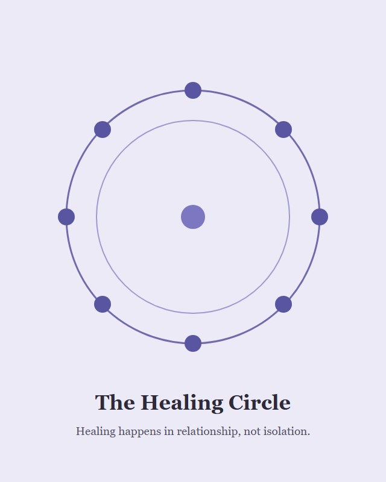

Step 1 · “Am I in survival mode?”
The 3-minute quiz
A quick, honest self-assessment: where is your nervous system living: survival mode, shutdown, or somewhere in between? Get your result and a first next step in about three minutes.
Take the quizFree trauma recovery resources
Start where you are.
You don’t have to be ready to hire a coach to begin. You just have to be tired of the loop. Start free: map the roots of your patterns with the Trauma Tree Worksheet, take the 3-minute quiz to see where your nervous system is stuck, and get the Sunday Letter: neuroscience and a gentler way home, every week. If you’re new here, follow the order below.
If you’re new, start here
Begin with the quiz, then the worksheet, then the weekly letter: each one takes the next small step. You don’t need all of it at once. You need the next honest thing, in order.
Three minutes to see where your nervous system is stuck, and what it’s asking for.
Download the Trauma Tree Worksheet and trace the loop to the wound beneath the behavior.
Get the Sunday Letter so the work continues in your inbox, one small practice at a time.
Explore the free PDF library, or step into community and coaching when you’re ready.
The three free starters
Three no-cost tools, each answering a question you’ve probably already asked yourself. All free, all yours to keep: in the order most people use them.
Step 1 · “Am I in survival mode?”
A quick, honest self-assessment: where is your nervous system living: survival mode, shutdown, or somewhere in between? Get your result and a first next step in about three minutes.
Take the quizStep 2 · “Why do I keep repeating this?”
Map the roots (what happened), the trunk (the beliefs), and the branches (the patterns), and finally see the loop as one whole thing, not a hundred separate failures.
Download the worksheetStep 3 · “Why can’t I just relax?”
A weekly note for the ones who know their patterns and want them to change: neuroscience precision, a poetic reframe, and one small practice, every Sunday. No hustle, no shame, no urgency.
Subscribe freeThe free library
A growing shelf of short, practical guides, grouped by what you need right now. Each title opens a page that explains what it is and who it may help. All free to download.
For when the alarm will not quiet, and calm itself feels unsafe.

A workbook for making peace with the alarm system that kept you alive: learn to read your own body, then work with it instead of against it.
For seeing the loop as one whole thing, not a hundred separate failures.
The free download at the heart of the Method. Map the roots (what happened), the trunk (the beliefs), and the branches (the patterns) as one system.

Named for the way we lose ourselves: one small leaving at a time. A journal for noticing the exits, and choosing to stay.
For the brain that works differently, and the days trying harder is not the answer.

A 27-page ebook on why your brain works the way it does: executive function, RSD, and practical tools that work with your wiring instead of against it.

Printable cards with gentle reframes for the ADHD brain: for the days when executive function feels out of reach.
For building the life that comes after regulation, one honest choice at a time.

The workbook at the heart of the Method: prompts for all five steps and for building the intentional life that comes after regulation, one honest choice at a time.
Working through the memoir? The Addicted to Trauma Companion Workbook is free too, and you can read more about it on the memoir page.

Yes: The Healing Circle is an online community for women doing this work, so you’re not decoding the loop alone. It’s a place to ask questions, share the small wins that nobody else understands, and be reminded that safety is built in relationship, not isolation.
You are not broken. You are patterned. And patterns can change.
The Sunday Letter
Neuroscience precision, poetic reframe, and one small practice, every Sunday. No hustle, no shame, no urgency. Just companionship on the way home to yourself.